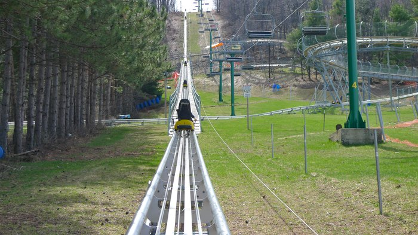

{kind=link}

Such an Amazing View

Traveling from Raleigh to Maryland we were looking for fun things to do with the family and we came across this amazing place!
Called Wisp Resort!!!
We found this place located in McHenry Maryland about 5 hours away from home, we immediately fell in love.
We are suckers for riding rides and the good thing about this,it"s open all year long! So it's no rush to this adventure. Take some time to plan ahead for this one!
Everyone is always talking about the known waterparks here in N.C , it's very so often that I would hear this name come up.
This water park is in the cut between Raleigh heading to Willimington Beach and can I start by saying for what you can enjoy for a low price, each person being under $20 bucks to get in, was a plus in my book. Taken advantage of, Thanks!
A park, where you can let your child run free with their new friends, while you read a book, or do what ever you call relaxing time. They allow you to rent tiki's (small med large) , with prices varying , your allowed to bring in coolers, food, or even an extra grill, even though one is provided. You can stay from open to close, so if you decided not to grillout, you can always leave and come back, to grab food or explore the place their town.
" Two Great water slides"- constantly go up as many times as you like because the lines is never that long of a wait.
"Wave Pool"-tons and tons of none stop waves
"lazy River"-There is about two places to be lazy in the water
"Kiddie Side"- such an interactive place for the young ones too and parents can tag allong and enjoy it too
"Inside store"-They serve food , have games to play and go karts to ride on the track and float in the water.